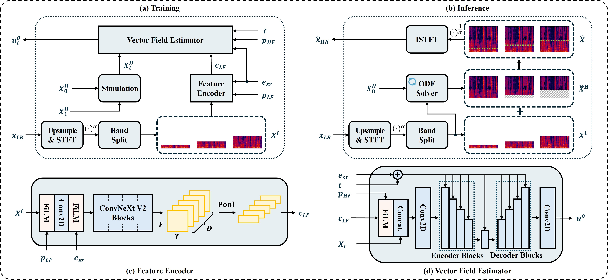
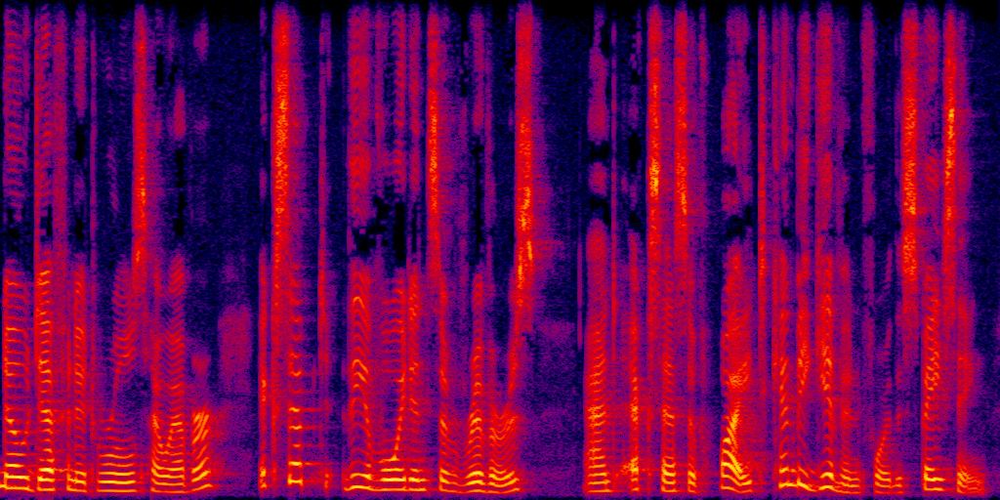

UNIVERSR: UNIFIED AND VERSATILE AUDIO SUPER RESOLUTION VIA VOCODER-FREE FLOW MATCHING
Anonymous Submission to ICASSP 2026
Authors
Anonymous Authors
Abstract
In this paper, we present a vocoder-free framework for audio super-resolution that employs a flow-matching generative model to capture the conditional distribution of complex-valued spectral coefficients. Unlike conventional diffusion-based two-stage approaches that first predict an intermediate mel-spectrogram and then rely on a pre-trained neural vocoder to synthesize waveforms, our method directly reconstructs waveforms via the inverse Short-Time Fourier Transform (iSTFT), thereby eliminating the dependence on a separate vocoder. This design not only simplifies end-to-end optimization but also overcomes a critical bottleneck of two-stage pipelines, where the final audio quality is fundamentally constrained by vocoder performance. Extensive experiments show that our model consistently produces high-fidelity 48 kHz audio across diverse upsampling factors, achieving state-of-the-art performance on both speech and general audio datasets.
Pipeline of UniverSR

Samples
TBD
|
Sample 1  |
|
Sample 2 |
|
Sample 3 |
|
Sample 4 |
|
Sample 5 |
|
Sample 6 |